Azure Key Vault Secrets Management using Azure CLI
Microsoft Azure | Cloud Security | Ubuntu Server 24.04 LTS
Project Overview
| Property | Value |
| Project Title | Azure Key Vault Secrets Management using Azure CLI on Linux Virtual Machine |
| Project Category | Cloud Security |
| Project Duration | Approximately 3 Hours |
This project demonstrates the deployment of a secure Azure Key Vault environment for protecting sensitive application secrets. The implementation includes creating a dedicated Resource Group, deploying an Azure Key Vault instance, storing multiple application secrets, provisioning an Ubuntu virtual machine, securely connecting via SSH, installing Azure CLI, authenticating to Azure using Device Code authentication, and retrieving secrets directly from Azure Key Vault through command-line operations.
The project follows Microsoft's recommended approach for centralized secret management by eliminating hardcoded credentials and allowing secure access to sensitive information only when required.
1. Business Scenario
Modern cloud applications often require access to sensitive information such as API keys, database passwords, and storage connection strings. Storing these values inside application source code or configuration files introduces significant security risks.
To address this challenge, Azure Key Vault provides a centralized and secure solution for storing, managing, and accessing secrets while maintaining strict access control and auditability.
In this project, Azure Key Vault is used as a centralized secret repository, while an Ubuntu virtual machine retrieves the stored secrets securely using Azure CLI after successful authentication.
2. Project Objectives
The primary objectives of this project were:
Deploy an Azure Key Vault.
Create a dedicated Resource Group.
Store sensitive application secrets securely.
Deploy an Ubuntu Linux virtual machine.
Configure secure SSH remote access.
Install Azure CLI.
Authenticate the virtual machine with Azure.
Retrieve secrets using Azure CLI.
Verify successful communication between the virtual machine and Azure Key Vault.
Demonstrate secure cloud-based secret management.
3. Lab Environment
| Component | Value |
| Cloud Platform | Microsoft Azure |
| Subscription | Azure subscription 1 |
| Region | East US 2 |
| Resource Group | rg-ycs-keyvault-lab-01 |
| Key Vault | kv-ycs-01 |
| Virtual Machine | vm-ycs-app-01 |
| Operating System | Ubuntu Server 24.04 LTS |
| Authentication | Azure Device Login |
| Access Method | Native SSH |
| Management Tool | Azure CLI |
4. Resources Created
| Resource Type | Resource Name |
| Resource Group | rg-ycs-keyvault-lab-01 |
| Azure Key Vault | kv-ycs-01 |
| Linux Virtual Machine | vm-ycs-app-01 |
| Secret | ApiKey |
| Secret | DatabasePassword |
| Secret | StorageConnectionString |
5. Project Architecture
Microsoft Azure | Resource Group: rg-ycs-keyvault-lab-01 | +-------------------+-------------------+ | | Azure Key Vault Ubuntu VM kv-ycs-01 vm-ycs-app-01 | | |<---------- Azure CLI + SSH ---------->| | +-- ApiKey +-- DatabasePassword +-- StorageConnectionString
6. Technologies Used
Microsoft Azure
Azure Resource Manager
Azure Key Vault
Azure Virtual Machines
Ubuntu Server 24.04 LTS
Azure CLI
OpenSSH
Windows PowerShell
Device Code Authentication
7. Security Features Implemented
The project incorporates several Azure security best practices:
Centralized secret storage.
Secrets stored outside application code.
SSH-based secure remote administration.
Azure CLI authentication using Microsoft identity.
Encrypted communication between Azure CLI and Azure services.
Secret retrieval only after successful authentication.
Centralized secret management within Azure Key Vault.
8. Implementation Steps
8.1 Create the Resource Group
A dedicated Resource Group was created to organize all project resources under a single management boundary.
| Property | Value |
| Resource Group | rg-ycs-keyvault-lab-01 |
| Region | East US 2 |
Using a dedicated Resource Group simplifies administration, access control, cost tracking, and resource cleanup after the project is completed.
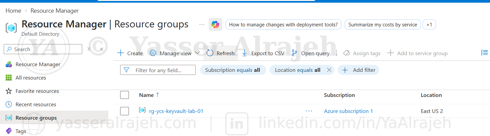
Resource Manager — Resource groups showing rg-ycs-keyvault-lab-01 in East US 2.
8.2 Deploy Azure Key Vault
A new Azure Key Vault was deployed successfully using Azure Resource Manager.
| Property | Value |
| Deployment Name | kv-ycs-01 |
| Resource Type | Key Vault |
| Resource Name | kv-ycs-01 |
| Deployment Status | Successful |
The Key Vault acts as a centralized and highly secure repository for storing application secrets, passwords, certificates, and cryptographic keys.
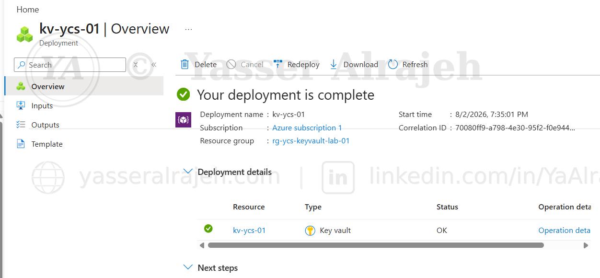
Deployment overview confirming kv-ycs-01 was deployed successfully to rg-ycs-keyvault-lab-01.
8.3 Create Application Secrets
Three application secrets were created inside Azure Key Vault.
| Secret Name | Purpose |
| ApiKey | API authentication key |
| DatabasePassword | Database credentials |
| StorageConnectionString | Azure Storage connection string |
All secrets are encrypted at rest by Azure Key Vault and protected through Azure security controls.
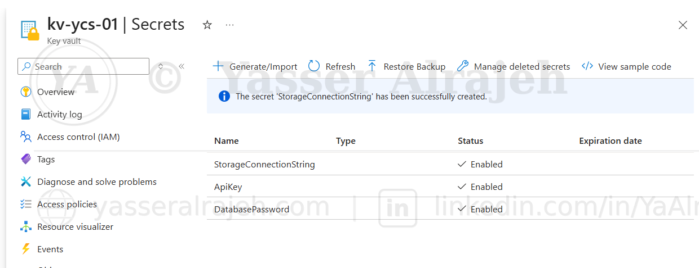
kv-ycs-01 Secrets pane confirming ApiKey, DatabasePassword, and StorageConnectionString were created and enabled.
8.4 Verify Secret Configuration
The StorageConnectionString secret was opened to verify its configuration.
Verified properties included:
Secret Identifier
Creation Time
Update Time
Secret Status
Secret Value
Enabled State
The secret was confirmed as enabled and ready for secure retrieval.
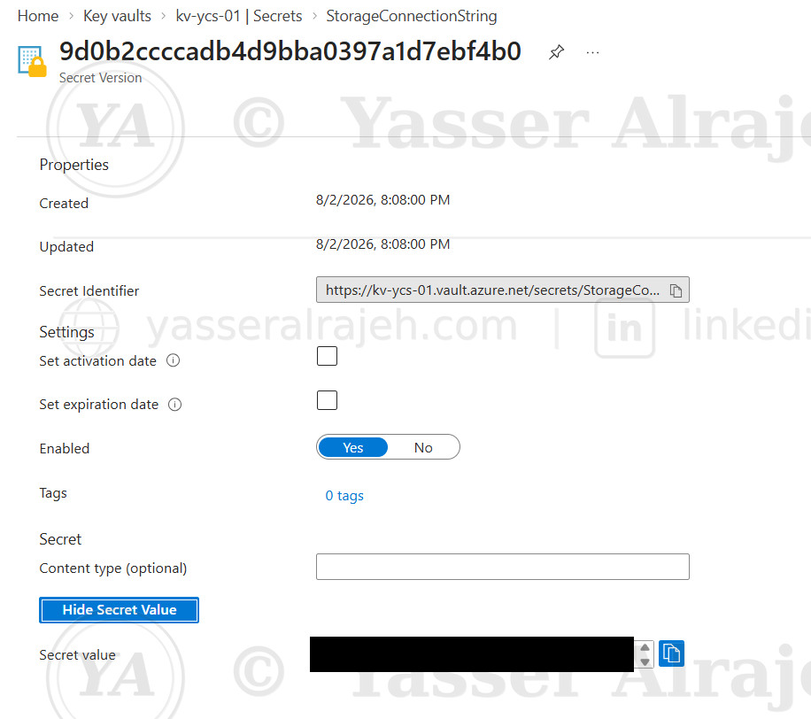
StorageConnectionString secret properties — confirmed enabled. The secret value is redacted for this portfolio.
8.5 Create Ubuntu Virtual Machine
An Ubuntu Server virtual machine was provisioned to simulate an application server accessing Azure Key Vault.
| Property | Value |
| VM Name | vm-ycs-app-01 |
| Operating System | Ubuntu Server 24.04 LTS |
| Region | East US 2 |
| Authentication | Local User |
| Username | azureuser |
The virtual machine represents a production workload that securely retrieves secrets from Azure Key Vault.
8.6 Configure SSH Connectivity
Azure automatically generated the SSH connection information.
| Property | Value |
| Protocol | SSH |
| Port | 22 |
| Public IP | 20.246.80.154 |
| Username | azureuser |
Azure verified that TCP port 22 was accessible through the Network Security Group. This validation confirms that remote administrative access is available.
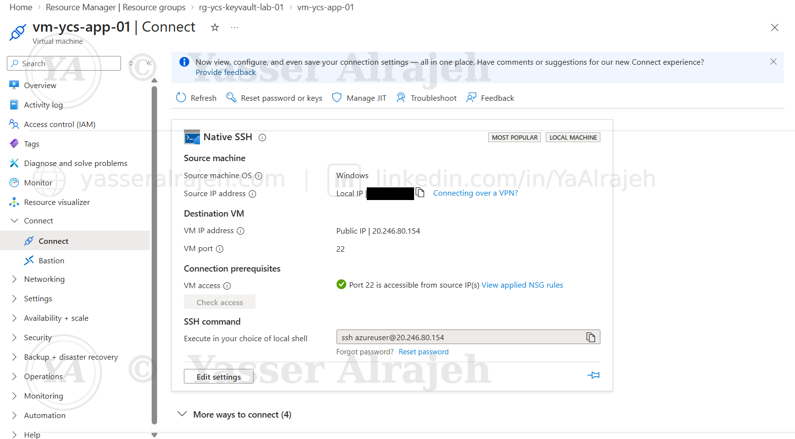
Native SSH connection blade — port 22 verified as accessible. The source (client) IP address is redacted for privacy.
8.7 Connect to the Linux Virtual Machine
A secure SSH session was established from Windows PowerShell.
Command executed:
ssh azureuser@20.246.80.154
After entering the local account password, the connection was successfully established. The administrator was presented with the Ubuntu login banner and shell prompt.
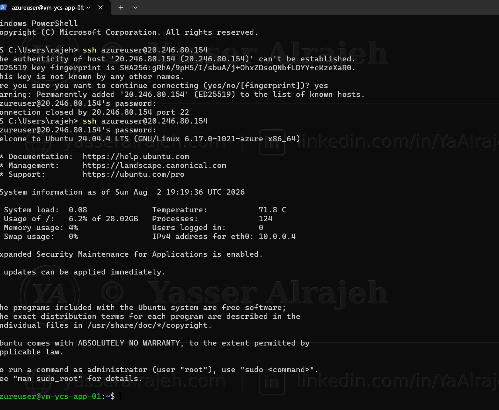
Windows PowerShell — SSH session established, Ubuntu 24.04.4 LTS login banner displayed.
8.8 Install Azure CLI
Azure CLI was installed inside Ubuntu to allow secure interaction with Azure resources.
The installation completed successfully and included:
Package download
Dependency installation
Repository configuration
Azure CLI version installation
Azure CLI provides a command-line interface for managing Azure resources directly from Linux.
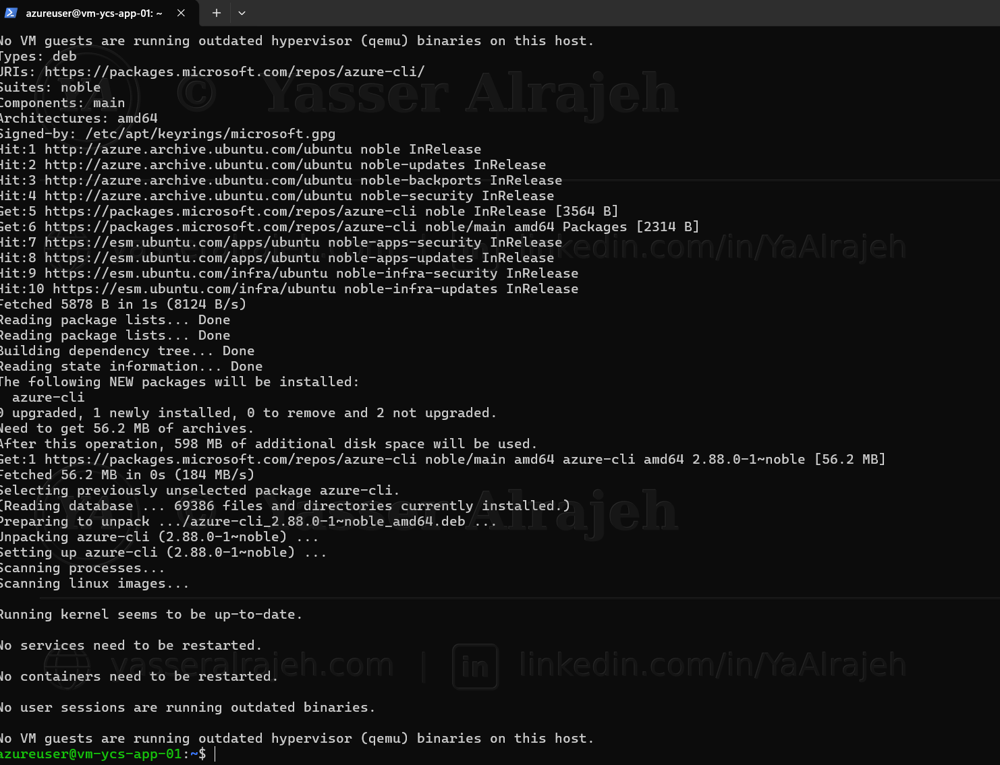
Azure CLI package installation completing successfully on the Ubuntu virtual machine.
8.9 Authenticate Azure CLI
Azure CLI authentication was initiated using Device Code authentication.
Command executed:
az login --use-device-code
Azure generated a temporary authentication code and instructed the user to visit Microsoft's device login portal. This authentication method is commonly used for systems without a graphical web browser.
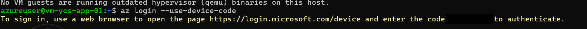
az login --use-device-code — Azure generates a one-time device code (redacted here since it grants sign-in access).
8.10 Complete Microsoft Authentication
The authentication code generated by Azure CLI was entered into Microsoft's authentication page.
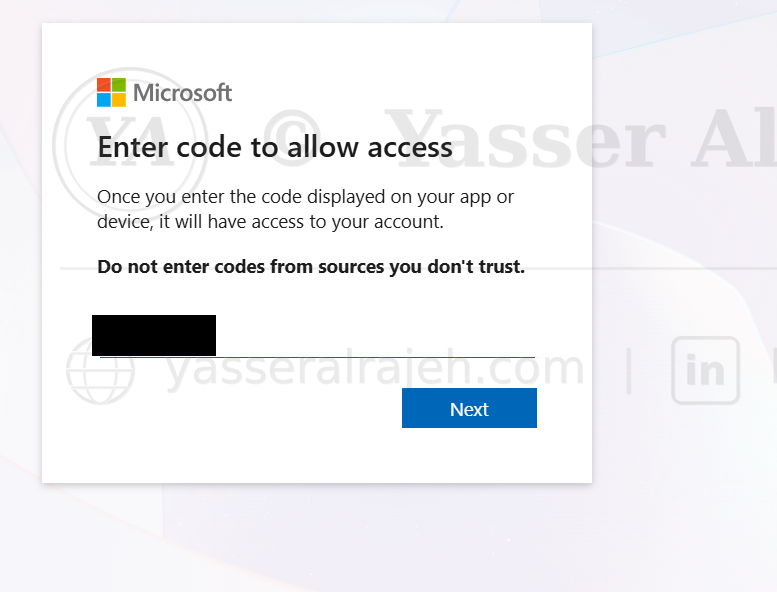
Microsoft device login page — entering the one-time code (redacted).
After successful authentication, Azure confirmed that the Linux virtual machine was authorized to access Azure resources. This completed the secure authentication process without exposing passwords inside the terminal.
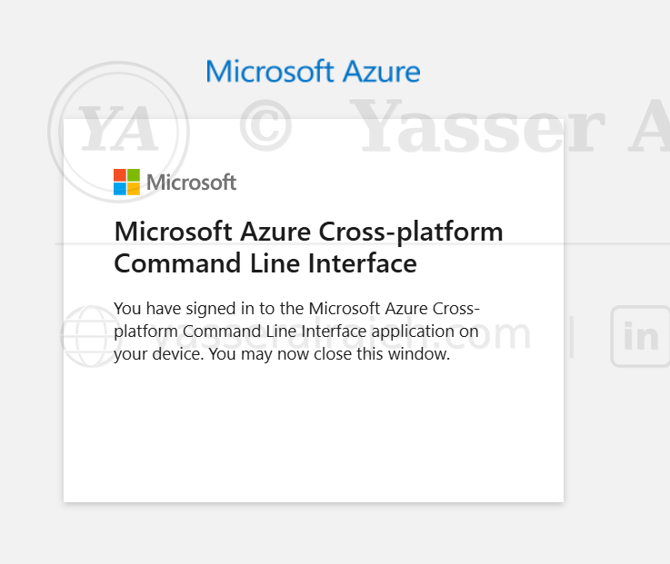
Microsoft Azure CLI confirming successful sign-in.
9. Azure CLI Operations, Validation, and Project Outcome
9.1 Verify Azure Authentication
After completing the Device Code authentication process, the active Azure subscription was verified using Azure CLI.
Command executed:
az account show
Purpose
The command displays information about the currently authenticated Azure account and confirms that Azure CLI is connected to the correct subscription.
Verification Results
The following information was successfully returned:
Active Azure Subscription
Subscription ID
Tenant ID
Tenant Name
User Account
Azure Cloud Environment
Subscription State
This validation confirms that Azure CLI is fully authenticated and authorized to communicate with Azure resources.
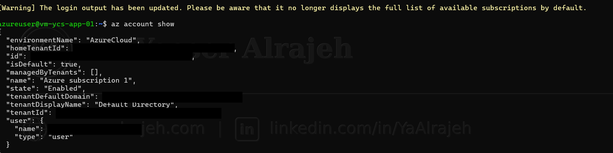
az account show — subscription and tenant details confirmed (tenant/subscription IDs and account email redacted for privacy).
9.2 List Available Secrets
After authentication was verified, Azure CLI was used to display all secrets stored inside Azure Key Vault.
Command executed:
az keyvault secret list \ --vault-name kv-ycs-01 \ --output table
Result
Azure CLI successfully returned the following secrets:
| Secret |
| ApiKey |
| DatabasePassword |
| StorageConnectionString |
This confirmed that:
The Key Vault exists.
Azure CLI can successfully communicate with Azure Key Vault.
The authenticated account has sufficient permissions to enumerate stored secrets.
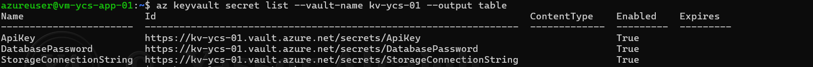
az keyvault secret list — all three secrets returned with their status confirmed as enabled.
9.3 Retrieve the API Key
The API key stored inside Azure Key Vault was retrieved using Azure CLI.
Command executed:
az keyvault secret show \ --vault-name kv-ycs-01 \ --name ApiKey \ --query value -o tsv
Purpose
Instead of storing API credentials inside application source code, Azure Key Vault securely stores the secret and returns it only after successful authentication.
Result
Azure CLI successfully returned the stored API key.
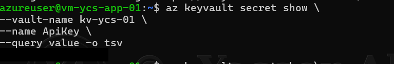
az keyvault secret show — ApiKey retrieved successfully. The returned value is redacted for this portfolio.
9.4 Retrieve the Database Password
The database password was retrieved directly from Azure Key Vault.
Command executed:
az keyvault secret show \ --vault-name kv-ycs-01 \ --name DatabasePassword \ --query value -o tsv
Purpose
This command demonstrates secure retrieval of database credentials without embedding passwords inside application configuration files.
Result
The password was successfully returned by Azure Key Vault after verifying the user's identity and permissions.
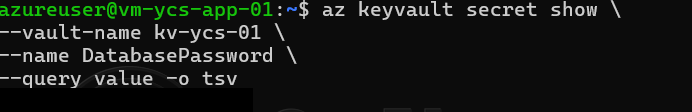
az keyvault secret show — DatabasePassword retrieved successfully. The returned value is redacted for this portfolio.
9.5 Retrieve the Storage Connection String
The final secret retrieved from Azure Key Vault was the storage connection string.
Command executed:
az keyvault secret show \ --vault-name kv-ycs-01 \ --name StorageConnectionString \ --query value -o tsv
Purpose
Applications commonly use storage connection strings to access Azure Storage Accounts. Storing them in Azure Key Vault prevents accidental exposure and simplifies credential management.
Result
Azure CLI successfully retrieved the connection string stored in the Key Vault.
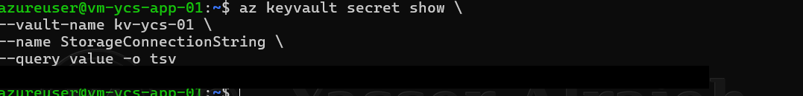
az keyvault secret show — StorageConnectionString retrieved successfully. The returned value is redacted for this portfolio.
10. Security Validation
The following security controls were successfully implemented during this project:
| Security Control | Status |
| Dedicated Resource Group | Completed |
| Azure Key Vault Deployment | Completed |
| Centralized Secret Storage | Completed |
| Secure SSH Remote Access | Completed |
| Azure CLI Installation | Completed |
| Microsoft Entra Authentication | Completed |
| Azure Subscription Verification | Completed |
| Secret Enumeration | Completed |
| Secure Secret Retrieval | Completed |
11. Skills Demonstrated
11.1 Microsoft Azure
Azure Resource Groups
Azure Virtual Machines
Azure Key Vault
Azure Resource Manager
11.2 Linux Administration
Ubuntu Server
SSH Remote Access
Command Line Administration
11.3 Azure CLI
Azure Authentication
Subscription Management
Key Vault Administration
Secret Enumeration
Secret Retrieval
11.4 Cloud Security
Centralized Secret Management
Secure Credential Storage
Identity-Based Authentication
Separation of Secrets from Application Code
Secure Administrative Access
12. Lessons Learned
During the implementation of this project, several important Azure administration concepts were reinforced:
Azure Key Vault provides a centralized repository for sensitive information.
Azure CLI offers a secure and efficient method for managing Azure resources directly from Linux.
Device Code authentication allows secure login without exposing account credentials.
Secrets should never be hardcoded inside application source code or configuration files.
SSH provides a secure encrypted channel for Linux administration.
13. Best Practices
The following best practices were applied throughout the project:
Store secrets in Azure Key Vault instead of application files.
Use Azure CLI for secure administrative operations.
Authenticate through Microsoft Entra ID before accessing Azure resources.
Limit administrative access to authorized users only.
Retrieve secrets only when required by applications or administrators.
Keep sensitive values outside source code repositories.
14. Project Outcome
The project successfully implemented a secure Azure Key Vault solution for centralized secret management within Microsoft Azure.
A dedicated Resource Group and Azure Key Vault were deployed, followed by the creation of multiple application secrets. An Ubuntu Server virtual machine was provisioned and accessed securely using SSH. Azure CLI was installed and authenticated through Microsoft Entra ID using Device Code authentication.
After authentication, Azure CLI successfully communicated with Azure Key Vault, listed all available secrets, and securely retrieved the stored API key, database password, and storage connection string.
This project demonstrates practical experience with Azure administration, Linux management, Azure CLI, secure authentication, and centralized secrets management, reflecting common operational tasks performed in enterprise cloud environments.
15. Technologies Used
Microsoft Azure
Azure Resource Manager (ARM)
Azure Key Vault
Azure Virtual Machines
Ubuntu Server 24.04 LTS
Microsoft Entra ID
Azure CLI
OpenSSH
Windows PowerShell
16. Project Summary
This project demonstrates a complete end-to-end implementation of secure secret management using Microsoft Azure. It covers infrastructure deployment, Linux virtual machine administration, Azure CLI configuration, identity-based authentication, and secure retrieval of application secrets from Azure Key Vault. The implementation reflects real-world cloud administration practices and provides a strong foundation for secure application credential management in enterprise Azure environments.